Studying Abroad has always been a mere dream of mine. One day I stumbled upon
the GSU study abroad website with zero plans of signing up for anything just simply bored and
looking for whats out there. I remember vividly speaking to my best friend on
the phone while I looked, at like 11 at night. First I saw Morocco, then Brazil,
then suddenly,
I was shocked to see the Bali Adventure: Culture & Sustainability program. Thinking back this was
like fate. I can’t believe I found this program right on time for 1, getting a
class I actually needed to graduate, 2, getting the characteristics of everything
I wanted to experience. Reading the description containing cultural immersion workshops,
staying at a Madras Homestay, trekking through indigenous villages, and the list goes on
did nothing short but excite the inner adventurer and nerd in me. I signed up for the program
that same moment and waited. How was I going to pay for it? IDK. What I did know is that, when
you feel something in your gut, something that seems too good to be true, you do not ignore it.
Guess What? I was accepted into the program... shocker. Here's how it went!
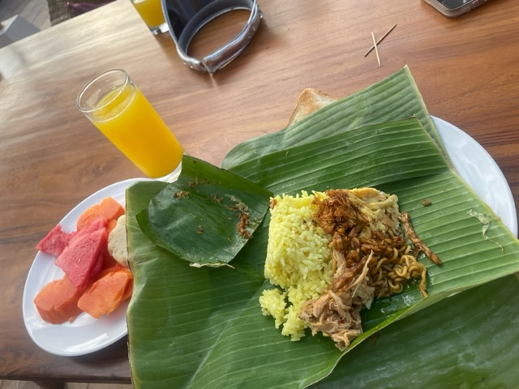
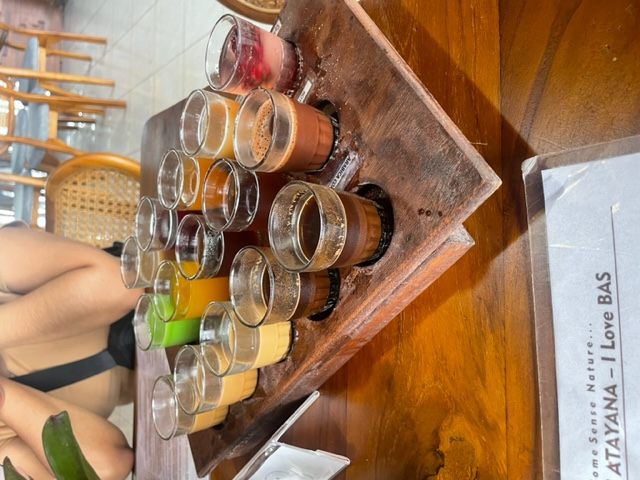
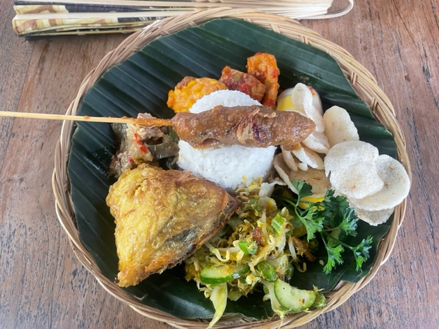
×
Ash
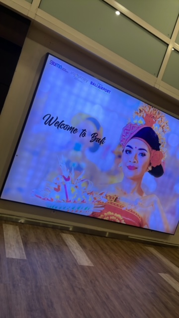
333 likes
We have arrived to Bali, Indonesia! After a long, long, long 24 hour connected flight we are now in beautiful At our first stop, Ubud!
dayu: Selamat Datang!
rika: Selamat Tidur!
Ash
333 likes
My joy is unmatched, thanks to my roomie for taking this after entering the hotel!
dayu: Mimpi Indah!
rika: Mimpi Indah!
Ash
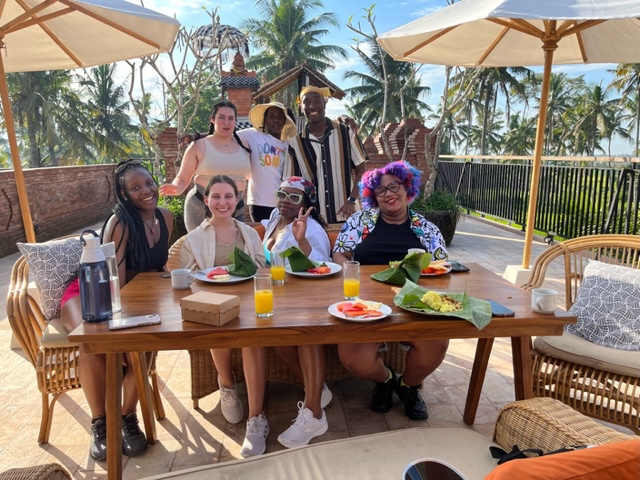
333 likes
Each morning the hotel served a traditional Balinese breakfast and it was absolutely incredible.
This picture was taken on the rooftop eatting area after each of us devoured our first plates.
The full plates that you see are 100% the seconds and thirds lol.
dayu: Selamat Pagi!
rika: Selamat Pagi!
Ash
333 likes
After a mini adventure we made it to orientation where Rika, Dayu, and Yudha taught us various aspects
of their Balinese culture & Hinduism. A few of my favorite moments are,
rika: Everyday of our life is connected
yudha: Time is Relationship
dayu: You get what you put into the world.
Ash
123 likes
After lunch we went on a scavenger hunt in which we talked to many many people in the town near our hotel!
This is a picture of a woman teaching me how to make offerings.
rika: sama-sama!
dayu: sama-sama!
Ash
333 likes
The next day we went on a herbal walk, exploring a beautiful trail and drinking delicious tea.
We learned about morning glory, a blue flower that has hallucination effects and is one of the most
poisonous plants in the entire world.
tourguide: Welcome tea for your house using morning glory!
rika: Ya!
Ash
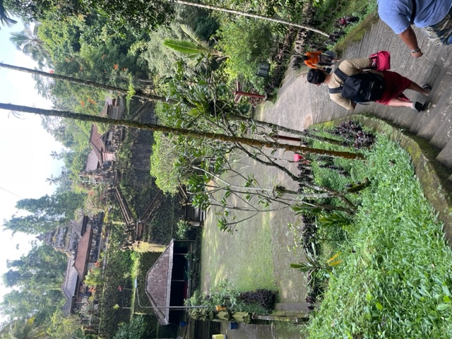
333 likes
Immediately after the temple we ventured to the beautiful Mengening Holy Spring Water Temple.
This was one of my moments of the entire trip! We learned about the sacred nature of water in
Balinese culture.
ayu: You can clean your body with water, clean your mind with education, and
clean your soul with dignity
ayu: Everything works when you believe
Ash
333 likes
Water fountains have specified meanings and have engravements telling each meaning.
Water is the best confession element, because it can keep a secret.
rika: Impressive video!
yudha Love it!
Ash
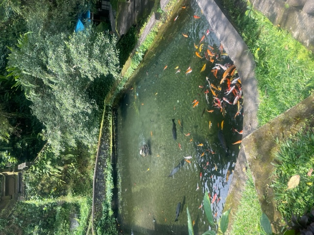
333 likes
Everything at this temple is absolutely beautiful! We learned many, many things about their culture.
rika: beautiful!
yudha Love it!
Ash
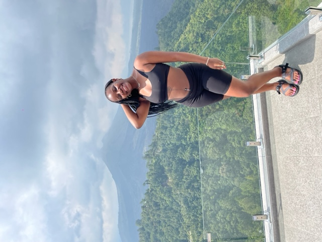
333 likes
For lunch we took a trip to a beautiful overlook of the Mount Blaur Volcano
in Kintamani, the food was incredible! Make sure to check out my food highlight!
dayu: Enak!
rika: Enak!
Ash
333 likes
After lunch we visited a Coffee Plantation and tasted various blends.
rika: Gorg!
dayu: Love it!
Ash
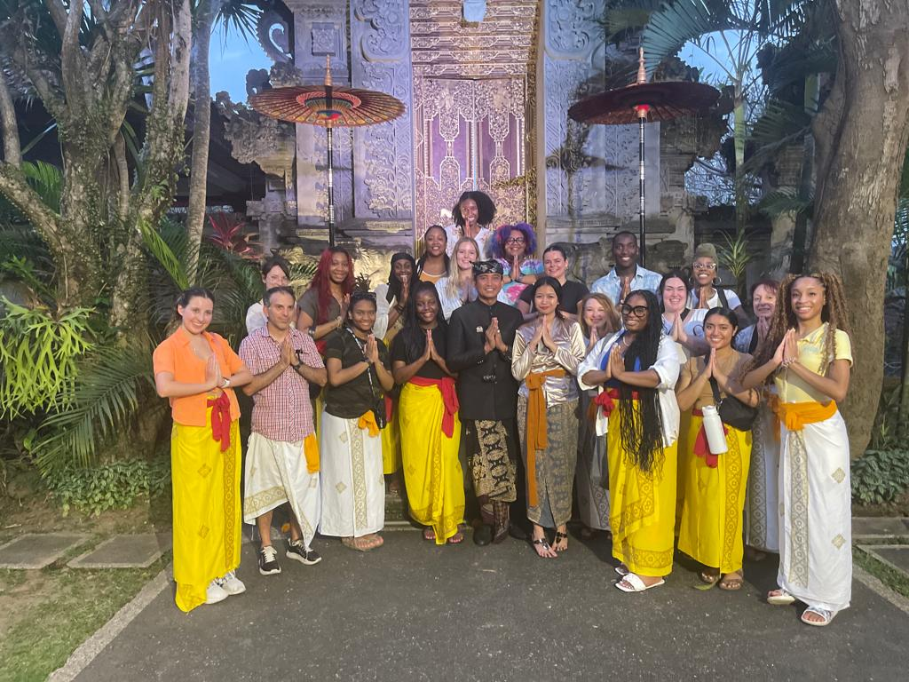
333 likes
We spent dinner at the Blahbatuh Royal Palace! We toured the palace and had the chance to
speak with the King and Princess over dinner about the current political climate in their district.
princess: I'm in a band!
rika: The Balinese Mochi was incredible!
Ash
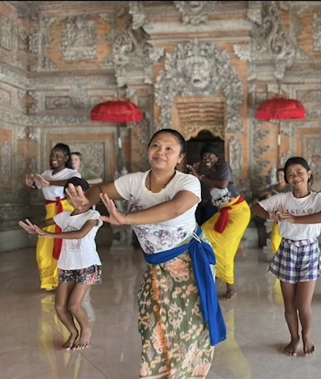
333 likes
Today the first stop is a Banjar Workshop! Every village has a Banjar or community center,
where villagers prepare offerings and food for ceremonies. We learned traditional gamelan music, the legong
dance in this picture, and how to create offerings.
yudha: Nice moves Ash!
rika: Love it!
Ash
333 likes
Here's a video of my mini group playing the drum song galak! We were honestly struggling,
but our instructor was extremely sweet the whole time!
rika: Impressive video!
yudha Love it!
Ash
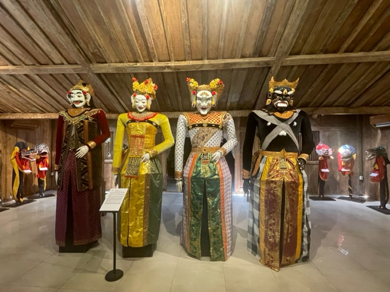
333 likes
Next stop is Museum Wayang and Topeng, a puppet museum! Pictured is the Barong Plok from Kediri religion, East Java.
In ancient culture it's a symbol of goodness against evil.
rika: Very pretty!
yudha: Love it!
Ash
333 likes
Ok, if someone would have asked me prior to this, do you want to walk in mud to your knees with cows and plant rice. I
may have said no. However, when in Bali, Indonesia, why not??!! This picture came after a Subak Lecture by a Local Expert
& Five Pillar instructor. Five Pillar focuses on sustainable tourism and impact travel that provides inspiring and responsible
travel experiences to showcase the beauty of rural communities, cultures, and natural environments of Bali.
yudha: Love the smiles!
rika: Love it!
Ash
333 likes
We began our day by visiting the non-governmental organization Kopernik that has the mission to redeuce
poverty by experimenting with potential solutions that address common challenges facing people living in the last mile.
Kopernik is spread amongst three smaller entities, Perfect Fit, The Magi Farm, and Rumbia. Each of these wonderful
organizations focus on different tasks all surrounding sustainability, such as reusable period solutions, renewable energy
solutions, and food-waste processing. A huge takeaway for me was learning of the stigma of periods in Indonesia
and how reusuable period underwear is helping them overcome it.
@Kopernik.info @Perfectfit_id
adnya: We have created a Virtual Reality system to view farmers conditions!
arya: We would like to reduce single-use plastic!
Ash
333 likes
At the end of the night we gather together to watch a traditional Balinese dance performance.
It was incredible to watch this performance after having a beginner lesson in the same dance and
instruments the day prior. The performance was incredible and beautiful!
rika: Beautiful!
yudha: Love it!
Ash
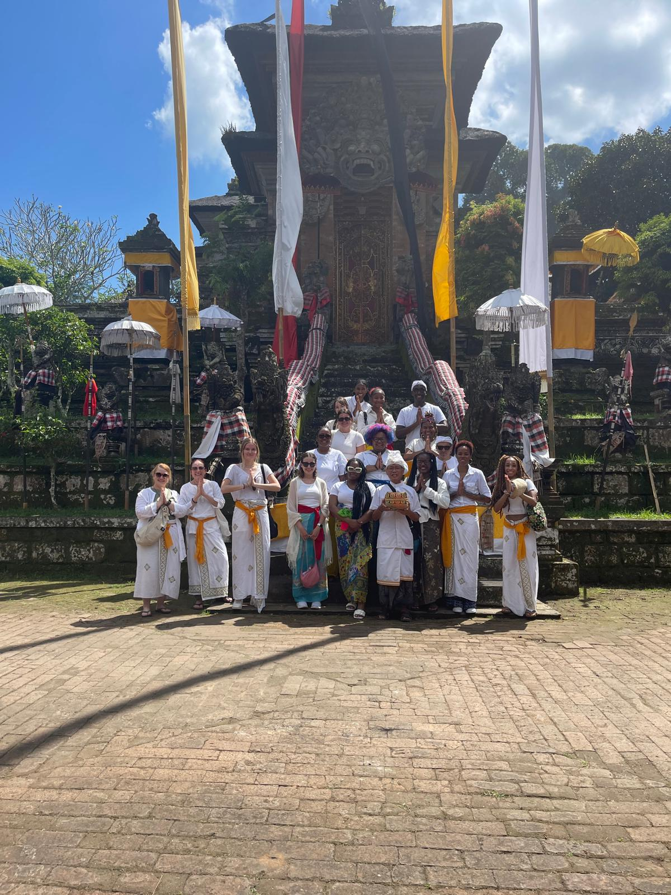
333 likes
Today is Sawaswati day! Saraswati day is a traditional Balinese holiday to celebrate the day when knowledge
is given by God through the beautiful goddess Saraswati. We began the day by visiting the Samuan Tiga Temple
and being guided and taught by Garrett Kam. This was a beautiful experience and lesson in which we were able to
perform a Balinese prayer.
yudha: Say Baliiiii!
thegroup: Baliiiiii!
Ash
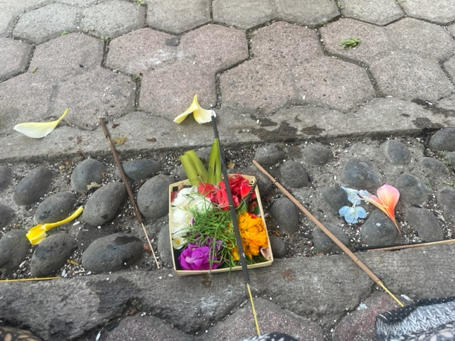
333 likes
This is a picture of my offering I used during our morning prayer. Each flower has it's own meaning, white petals
representing the God Iswara, red petals representing Brahma and yellow flowers representing Mahadeva. I began
by lighting incense and placing it on top of my offering.
The priest says a few words, as you life your palms together to you forehead. The bell ringed as I placed flowers in my hands,
then ears. I put out the incense was doused with holy water and am offerred rice. Traditionally, sips of water are taken, and each
of these steps are done in threes. The most amazing aspect of this prayer was being guided to pray for my dreams, my family, my career
and prosperity.
yudha: Beautiful!
rika: Love it!
Ash
333 likes
Our last trip of the day was at the non-governmental organization The PKP Community Center. The founder Ibu Sari Pollen
dedicate her life to helping vulnerable women and children in Bali after her own experience of going through a divorce
and not being allowed to see her daughter for 12 years. In Bali, divorce is completely different, the women are forced to
not just leave the home, but the community and never come back. While at the center we met the children being given an education
at the organization, took a second to engage in a yoga class, and speak to Ibu Sari Pollen, about her story and how she is helping
women in Bali. This picture is me and her!
Learn More Here
quotesByIbu: A bamboo hut maybe luxury for you all but not to us.
quotesByIbu: When Balinese women leave their husband, they leave the family naked, without the kids,
without the money, nothing, and are viewed as prostitutes.
Ash
333 likes
In this picture our two out of three of our amazing tour guides Dayu and Rika. You may have seen their
comments on my profile. We gained a beautiful friendship in the last few days and at the PKP we took a second
to capture a memory during the tour. I was maybe 20 bug bites in at the point, but full of smiles still!
dayu: Wonderful meeting you!
rika: Love it!
Ash
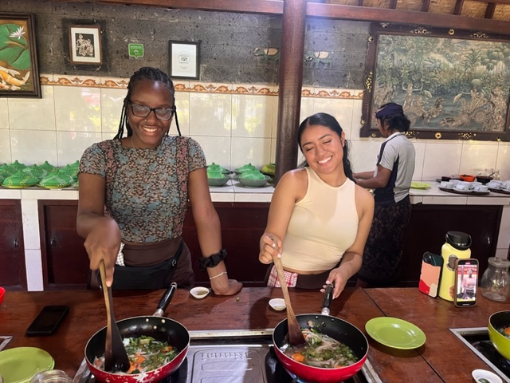
333 likes
Today we drove to Ubad Ubud to learn traditional Balinese recipes and we did a fantastic job. The food was
wonderful and I still have my recipes so I will be cooking each of these receipes as much as possible
yudha: Fun fact, my mother is the instructor of Ubad Ubud Cooking Class!
ibu: We loved having you!
Ash
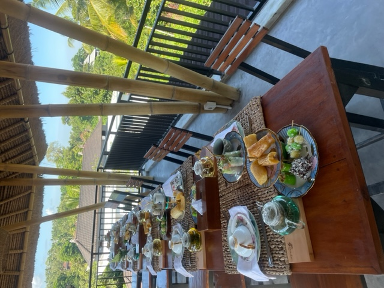
333 likes
My first tea party! We visited Made Tea a beautiful farm that grows a variety of local plants and herbs in which
the owner a sweet woman Made, shares with the world to improve the health, happiness, and wellbeing of her
community with various tea blends.
rika: Enak Tea!
yudha: Enak Tea!
Ash
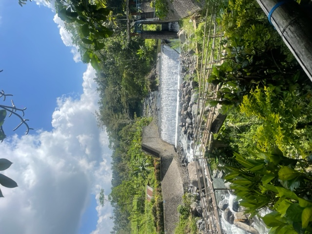
333 likes
Ok yall, look at this view! Today we went on a trek to the Tenganan Indigenous Village and it was incredible.
I love to hike and this was extremely challenging, the bridge you see, we walked it. The bridge is literally made solely
out of bamboo, I put my phone in my pocket and stepped as fast as I could. The actual trek was about 4 hours and
every step of the way was beautiful!
rika: Beautiful!
dayu: Beautiful!
Ash
333 likes
Last night we drove to Amed in which our hotel is right on the beach! I woke up extremely early to watch the sunrise!
Only on trips can I wake up this early! The sunrise was beautiful, and today we are snorkeling!!!! I cannot wait!
rika: Beautiful!
dayu: Beautiful!
Ash
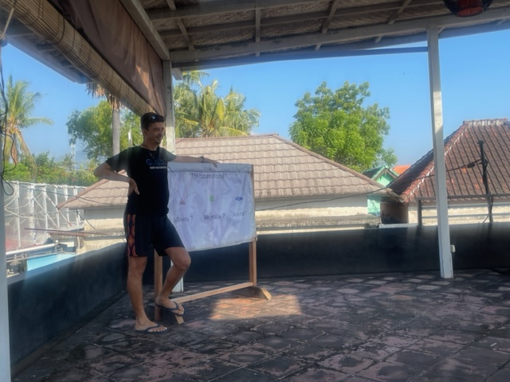
333 likes
Today was amazing. This picture is terrible, but it's the only one I got because I spent like 3 hours in the ocean. This was
the instruction we had prior to snorkeling to learn how to effectively do so. The water felt amazing and viewing the coral reef
was a surreal experience!
rika: Had a fantastic time!
dayu: Beautiful!
Ash
333 likes
Today was extremely relaxed and we have lots of free time so here's a picture I took during the hike a few days ago.
I love this picture and just seeing myself in the moment while over a very big cliff! Tonight we go to Sanur and I couldn't
be more sad that the trip is almost over.
rika: Same!
dayu: Can't wait to go to Sanur!
Ash
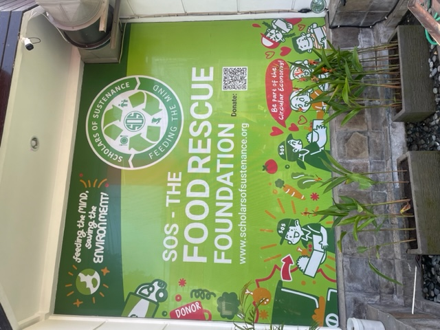
333 likes
Today we gave back to the community and helped the organization Scholars of Sustenance (SOS) create 200 plates
to give to the children at the local school!
rika: Had a great time!
dayu: Professional Chef!
Ash
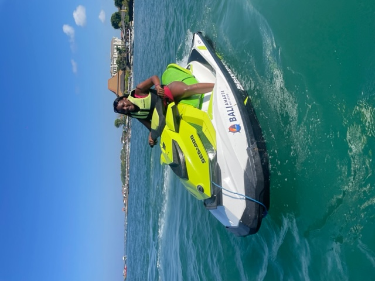
333 likes
Since we had free time and our time in Bali is almost up, I had to... I have always wanted to jetski and found the perfect time to take this adventure.
The best part of this trip was the safety I felt everywhere I went with or without my program group. I actually went
alone and met wonderful people who made this ten times more incredible.
rika: Beautiful!
dayu: Beautiful!
Ash
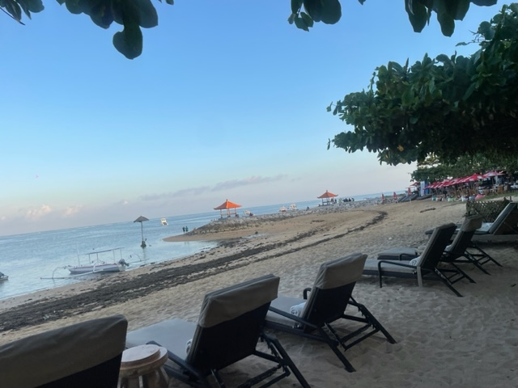
333 likes
Tonight, our program leaders Dayu, Rika, Yudha surprised us with a goodbye dinner on the beach! It's extremely
bitter sweet, but I have cherished every last moment of this study abroad program!
rika: Love the bag!
dayu: Beautiful!
Ash
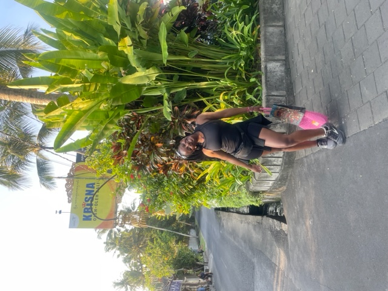
333 likes
Today is our last day. After our good bye dinner last night, I am extremely sad to go but couldn't be happier to have
this opportunity! Today we took a trip to Krisna Oleh-Oleh Bali to grab a few souvenirs where I copped this beautiful pink bag!
rika: Love the bag!
dayu: Beautiful!
Ash
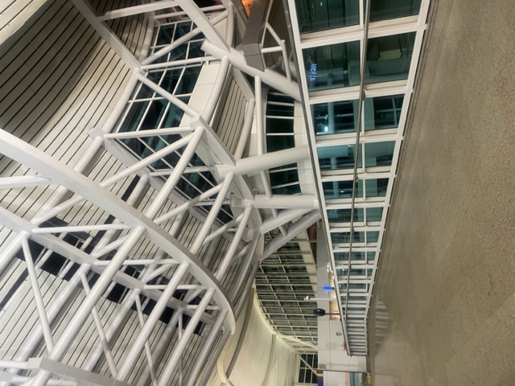
333 likes
Bye Baliiii! I will miss you! I will comeback! This study abroad trip was everything I ever desired for it
to be and 100 times more. Many people ask me to speak about it and I still cant bring all of my feelings one
complete sentence. I hope you all enjoyed viewing my profile! Suksma Bali!!